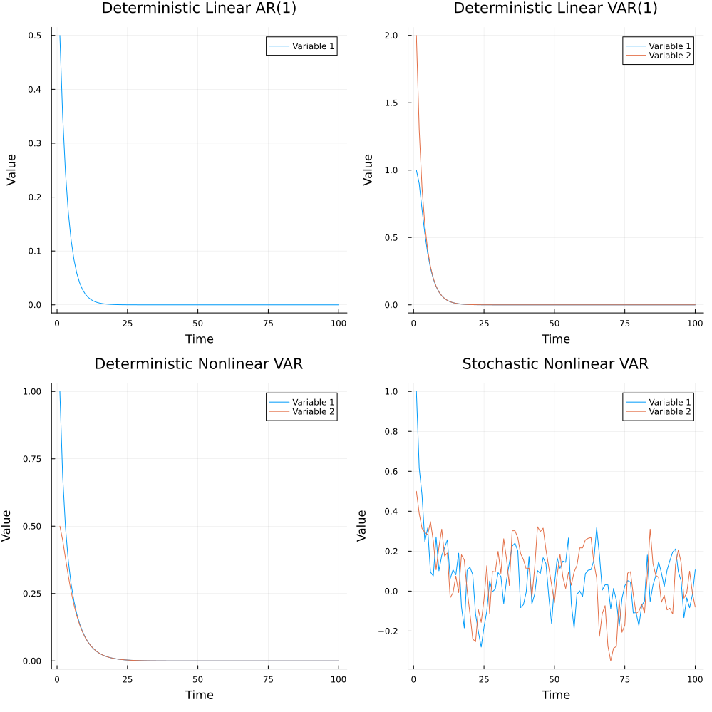

State Space Model
We switch from functions to functors for state transitions, states become categories, and use it for a monetary macro accounting (MoMa) then MES, ERP and EcRP.
A usual way to model dynamics of economic systems are state space models. We will see now how to model them in MES to use them for a simple economics approach to model the MoMa phenomenon of money. This is the tranditional way we have implemented a first version of MoMa25 in simple Julia in file momascf_v02_en.jl. It is a deterministic nonlinear model but still reduced form model. Reduced form model is a economists way to say its a Markov decision process not even forward looking which would an economist call structural model. These forward lookings models can be modeled as Open Games but actually economic models should become MES systems where Open Games are coregulators.
State Space Model as MES
Traditional state space models represent system dynamics as simple vector-valued functions mapping states to states. While this approach is intuitive and computationally efficient, it has several limitations:
Limited Expressiveness: Traditional state space models can only represent direct state-to-state mappings, making it difficult to model:
- Complex hierarchical relationships
- Multiple time scales
- Emergent properties
- Memory-dependent dynamics
No Built-in Structure: Standard state space models don't naturally capture:
- System composition
- Component relationships
- Temporal dependencies
- Memory formation
Rigid Evolution: Conventional models often struggle with:
- Adaptive behavior
- System reconfiguration
- Emergent complexity
- Multi-level interactions
The Memory Evolutive Systems (MES) framework, built on category theory, addresses these limitations by:
Rich Mathematical Structure:
- Objects represent system components
- Morphisms capture relationships and transformations
- Categories organize system structure
- Functors model system evolution
Built-in Memory:
- Explicit representation of past states
- Temporal ordering through categorical structure
- Memory formation through colimits
- Historical dependencies
Flexible Composition:
- Hierarchical organization
- Component relationships
- System decomposition
- Emergent properties
Natural Evolution:
- Functorial dynamics
- Adaptive behavior
- System reconfiguration
- Multi-level interactions
The following examples demonstrate these advantages in practice, showing how MES and category theory provide a more powerful framework for modeling complex dynamical systems.
Memory
The TimeSeriesMemory type provides a structured way to store and manage time series data with explicit temporal relationships between states. It maintains three key components:
times: Vector of time pointsstates: Vector of state valueslinks: Vector of morphisms connecting consecutive states
Core Functions
# Create a new time series memory
TimeSeriesMemory(initial_time::Object{Float64}, initial_state::Object{T})
# Extend memory with new time point and state
extend!(memory::TimeSeriesMemory{T}, new_time::Object{Float64}, new_state::Object{T}, link::Morphism)
# Access memory components
get_data(memory::TimeSeriesMemory)::Vector{T}
get_times(memory::TimeSeriesMemory)::Vector{Float64}
get_links(memory::TimeSeriesMemory)::Vector{Morphism}Example
# Create initial memory
t₁ = Object(:t1, 1.0)
s₁ = Object(:s1, [1.0])
memory = TimeSeriesMemory(t₁, s₁)
# Verify initial state
@assert length(memory.times) == 1
@assert length(memory.states) == 1
@assert length(memory.links) == 0
# Extend memory with new state
t₂ = Object(:t2, 2.0)
s₂ = Object(:s2, [2.0])
link = Morphism(s₁, s₂, x -> 2.0 * x, :link)
extend!(memory, t₂, s₂, link)
# Verify extended state
@assert length(memory.times) == 2
@assert length(memory.states) == 2
@assert length(memory.links) == 1
# Access memory components
data = get_data(memory)
times = get_times(memory)
links = get_links(memory)
# Verify data types and values
@assert length(data) == 2
@assert length(times) == 2
@assert length(links) == 1
@assert all(x -> x isa Vector{Float64}, data)
@assert all(x -> x isa Float64, times)
@assert all(x -> x isa Morphism, links)
@assert data[1] == [1.0]
@assert data[2] == [2.0]
@assert times[1] == 1.0
@assert times[2] == 2.0AR(1) Model
The first-order autoregressive model represents a simple state space model where the next state depends linearly on the current state:
\[x_{t+1} = \alpha x_t\]
where $\alpha$ is the autoregression coefficient.
Implementation
The AR(1) model is implemented using the following functions:
function create_ar_model(initial_state::Vector{Float64})
t₁ = Object(:t1, 1.0)
s₁ = Object(:s1, initial_state)
time_step = Morphism(t₁, Object(:t2, 2.0), t -> t + 1.0, :time_step)
evolution = Morphism(s₁, Object(:s2, [0.0]), x -> [0.7 * x[1]], :evolution)
return t₁, s₁, time_step, evolution
endThis implementation uses category theory concepts:
Objects represent time points and statesMorphisms represent the evolution of time and states- The time step morphism maps each time point to the next one
- The evolution morphism implements the AR(1) equation $x_{t+1} = \alpha x_t$ with $\alpha = 0.7$
Example
# Create and simulate AR(1) model
t₁, s₁, time_step, evolution = create_ar_model([0.5])
memory = simulate_dynamics(t₁, s₁, time_step, evolution, 5)
# Verify the model behavior
@test s₁.data == [0.5]
@test time_step.map(1.0) == 2.0
@test evolution.map([0.5]) == [0.35]VAR(1) Model
The first-order vector autoregressive model extends the AR(1) model to multiple dimensions:
\[\mathbf{x}_{t+1} = A\mathbf{x}_t\]
where $A$ is the coefficient matrix and $\mathbf{x}_t$ is a vector of states.
Implementation
The VAR(1) model is implemented using:
function create_var_model(initial_state::Vector{Float64}, A::Matrix{Float64})
t₁ = Object(:t1, 1.0)
s₁ = Object(:s1, initial_state)
time_step = Morphism(t₁, Object(:t2, 2.0), t -> t + 1.0, :time_step)
evolution = Morphism(s₁, Object(:s2, similar(initial_state)), x -> A * x, :evolution)
return t₁, s₁, time_step, evolution
endThis implementation extends the AR(1) model to multiple dimensions:
- Uses the same categorical structure with
Objects andMorphisms - The evolution morphism implements the VAR(1) equation $\mathbf{x}_{t+1} = A\mathbf{x}_t$
- Matrix multiplication is used to compute the next state vector
Example
# Create and simulate VAR(1) model
A = [0.5 0.2; 0.1 0.6]
t₁, s₁, time_step, evolution = create_var_model([1.0, 2.0], A)
memory = simulate_dynamics(t₁, s₁, time_step, evolution, 100)
# Verify the model behavior
@test s₁.data == [1.0, 2.0]
@test evolution.map([1.0, 2.0]) .== A * [1.0, 2.0]Nonlinear VAR Model
The nonlinear VAR model introduces nonlinear transformations to the state evolution:
\[\mathbf{x}_{t+1} = f(A\mathbf{x}_t)\]
where $f$ is a nonlinear function applied element-wise.
Implementation
The nonlinear VAR model is implemented using:
function create_nonlinear_var_model(initial_state::Vector{Float64}, A::Matrix{Float64})
t₁ = Object(:t1, 1.0)
s₁ = Object(:s1, initial_state)
time_step = Morphism(t₁, Object(:t2, 2.0), t -> t + 1.0, :time_step)
evolution = Morphism(s₁, Object(:s2, similar(initial_state)), x -> A * x + 0.1 * sin.(x), :evolution)
return t₁, s₁, time_step, evolution
endThis implementation adds nonlinearity to the VAR model:
- Maintains the same categorical structure
- The evolution morphism combines linear transformation with nonlinear sine function
- The nonlinear term $0.1\sin(\mathbf{x})$ is applied element-wise to the state vector
Example
# Create and simulate nonlinear VAR model
t₁, s₁, time_step, evolution = create_nonlinear_var_model([1.0, 0.5], A)
memory = simulate_dynamics(t₁, s₁, time_step, evolution, 100)
# Verify the model behavior
@test s₁.data == [1.0, 0.5]
@test evolution.map isa Function
result = evolution.map([1.0, 0.5])
@test length(result) == 2
@test all(isfinite, result)Stochastic Nonlinear VAR Model
The stochastic nonlinear VAR model adds random components to the state evolution:
\[\mathbf{x}_{t+1} = f(A\mathbf{x}_t) + \boldsymbol{\epsilon}_t\]
where $\boldsymbol{\epsilon}_t$ is a random noise vector.
Implementation
The stochastic nonlinear VAR model is implemented using:
function create_stochastic_nonlinear_var_model(initial_state::Vector{Float64}, A::Matrix{Float64})
t₁ = Object(:t1, 1.0)
s₁ = Object(:s1, initial_state)
time_step = Morphism(t₁, Object(:t2, 2.0), t -> t + 1.0, :time_step)
evolution = Morphism(s₁, Object(:s2, similar(initial_state)),
x -> A * x + 0.1 * sin.(x) + 0.1 * randn(length(x)), :evolution)
return t₁, s₁, time_step, evolution
endThis implementation adds stochasticity to the nonlinear VAR model:
- Uses the same categorical structure
- The evolution morphism combines:
- Linear transformation $A\mathbf{x}$
- Nonlinear term $0.1\sin(\mathbf{x})$
- Random noise $0.1\boldsymbol{\epsilon}$ where $\boldsymbol{\epsilon} \sim \mathcal{N}(0,1)$
- Each call to the evolution morphism produces a different result due to the random component
Example
# Create and simulate stochastic nonlinear VAR model
t₁, s₁, time_step, evolution = create_stochastic_nonlinear_var_model([1.0, 0.5], A)
memory = simulate_dynamics(t₁, s₁, time_step, evolution, 100)
# Verify the model behavior
@test s₁.data == [1.0, 0.5]
@test evolution.map isa Function
results = [evolution.map([1.0, 0.5]) for _ in 1:10]
@test all(x -> length(x) == 2, results)
@test all(x -> all(isfinite, x), results)
@test length(unique(results)) > 1 # Ensure stochastic behaviorVisualization
The state space models can be visualized using the following functions:
# Create time series plots for each model
p1 = plot_timeseries(ar1_memory, "Deterministic Linear AR(1)")
p2 = plot_timeseries(var1_memory, "Deterministic Linear VAR(1)")
p3 = plot_timeseries(nonlinear_memory, "Deterministic Nonlinear VAR")
p4 = plot_timeseries(stochastic_memory, "Stochastic Nonlinear VAR")
# Create comparison plot
comparison_plot = plot(p1, p2, p3, p4, layout=(2, 2), size=(1000, 1000))
savefig(comparison_plot, "dynamics_comparison.png")
Implementation Details
The following code snippets show the core implementation of the state space models in the statespace.jl file:
Time Series Memory Structure
struct TimeSeriesMemory{T}
times::Vector{Object{Float64}}
states::Vector{Object{T}}
links::Vector{Morphism{T,T}}
function TimeSeriesMemory{T}(initial_time::Object{Float64}, initial_state::Object{T}) where {T}
new{T}([initial_time], [initial_state], Morphism{T,T}[])
end
endCore Functions
function extend!(memory::TimeSeriesMemory{T}, new_time::Object{Float64}, new_state::Object{T}, link::Morphism{T,T}) where {T}
push!(memory.times, new_time)
push!(memory.states, new_state)
push!(memory.links, link)
end
function get_data(memory::TimeSeriesMemory{T}) where {T}
return [state.data for state in memory.states]
end
function get_times(memory::TimeSeriesMemory{T}) where {T}
return [t.data for t in memory.times]
end
function get_links(memory::TimeSeriesMemory{T}) where {T}
return memory.links
endData Collection and Visualization
function collect_timeseries(memory::TimeSeriesMemory{T}) where {T}
return (get_times(memory), get_data(memory))
end
function plot_timeseries(memory::TimeSeriesMemory{T}, title::String="Time Series") where {T}
times, data = collect_timeseries(memory)
# Handle both scalar and vector states
if data[1] isa Vector
n_vars = length(data[1])
p = plot(title=title, xlabel="Time", ylabel="Value")
for i in 1:n_vars
plot!(p, times, [d[i] for d in data], label="Variable $i")
end
else
p = plot(times, data, title=title, xlabel="Time", ylabel="Value")
end
return p
endModel Creation Functions
function create_ar_model(initial_state::Vector{Float64})
t₁ = Object(:t1, 1.0)
s₁ = Object(:s1, initial_state)
time_step = Morphism(t₁, Object(:t2, 2.0), t -> t + 1.0, :time_step)
evolution = Morphism(s₁, Object(:s2, [0.0]), x -> [0.7 * x[1]], :evolution)
return t₁, s₁, time_step, evolution
end
function create_var_model(initial_state::Vector{Float64}, A::Matrix{Float64})
t₁ = Object(:t1, 1.0)
s₁ = Object(:s1, initial_state)
time_step = Morphism(t₁, Object(:t2, 2.0), t -> t + 1.0, :time_step)
evolution = Morphism(s₁, Object(:s2, similar(initial_state)), x -> A * x, :evolution)
return t₁, s₁, time_step, evolution
end
function create_nonlinear_var_model(initial_state::Vector{Float64}, A::Matrix{Float64})
t₁ = Object(:t1, 1.0)
s₁ = Object(:s1, initial_state)
time_step = Morphism(t₁, Object(:t2, 2.0), t -> t + 1.0, :time_step)
evolution = Morphism(s₁, Object(:s2, similar(initial_state)), x -> A * x + 0.1 * sin.(x), :evolution)
return t₁, s₁, time_step, evolution
endDynamics Simulation
function simulate_dynamics(t₁::Object{Float64}, s₁::Object{T}, time_step::Morphism, evolution::Morphism, n_steps::Int) where {T}
memory = TimeSeriesMemory{T}(t₁, s₁)
for i in 1:n_steps
t_next = Object(Symbol("t$(i+1)"), time_step.map(memory.times[end].data))
s_next = Object(Symbol("s$(i+1)"), evolution.map(memory.states[end].data))
link = Morphism(memory.states[end], s_next, evolution.map, Symbol("link$i"))
extend!(memory, t_next, s_next, link)
end
return memory
end